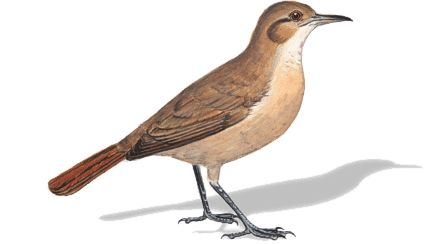
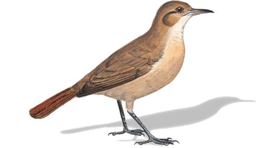

Que son los Animales y que cualidades poseen según algunos factores
Son aquellos seres vivos que poseen movimiento, cumplen el ciclo vital de
nacer, crecer, reproducirse y morir, sienten, y se alimentan de sustancias orgánicas, presentes en el
mundo exterior, que les proporcionan energía, denominándose por ello heterótrofos, ya que no producen
como las plantas su propio alimento (nutriciónautótrofa). Sus alimentos son las plantas u otros
animales, y tienen la aptitud, a diferencia de las plantas, de poder desplazarse, mediante el vuelo, el
nado, la caminata, saltando o arrastrándose, paraconseguirlos. Las plantas no necesitan ese
desplazamiento pues no tienen necesidad de atrapar su alimentación, al producirla ellas mismas. La
ciencia que estudia la vida animal es la zoología, tomando como objeto de su análisis losanimales
actuales y los pasados, a partir de sus restos fósiles, individualmente considerados oformando sistemas
o grupos, y en relación a su hábitat.
Cual es la clasificación de los Animales según la constitución de sus huesos
Animales Vertebrados = Un
vertebrado es un animal que tiene un esqueleto con columna vertebral y cráneo, y cuyo sistema nervioso
central está formado por la médula espinal y el encéfalo. El término proviene del latín vertebratus.Los
vertebrados (Vertebrata) pertenecen al filo de los cordados, aquellos animales que se caracterizan por
la presencia de una cuerda dorsal o notocordio. Los especialistas estiman que existen entre 50.000 y
61.000 especies de cordados en la actualidad. Los animales vertebrados han tenido la capacidad de
adaptarse a distintos medios. Algunos han evolucionado en el mar y después pasaron al medio
terrestre.Por lo general, el cuerpo de los vertebrados puede dividirse en tres regiones= cabeza, tronco
(que, a su vez, se subdivide en tórax y abdomen) y cola. En el tronco, sobresalen las extremidades, que
son pares en todos los vertebrados.
Animales Invertebrados =
Se conoce como animales invertebrados al conjunto de las especies del reino animal que no poseen un
notocordio o cuerda dorsal, ni una columna vertebral, ni un esqueleto interno articulado. En este
conjunto se encuentran el 95% de las especies vivas conocidas, entre 1,7 y 1,8 millones de especies
(cifras de 2005).
Los invertebrados suelen además ser de menor tamaño, en comparación con los grandes vertebrados
terrestres o acuáticos, y aunque carecen de un esqueleto articulado, a menudo cuentan con exoesqueleto
(como los insectos) o de cáscaras y caparazones de sustancias resistentes (como los moluscos).
Cual es la clasificación de los Animales según el consumo de materia organica
Animales cuya dieta esta constituida solo de plantas y hierbas
Los animales herbívoros son los animales cuya alimentación esta conformada en su
totalidad y en la mayoría
del tiempo de animales del tipo vegetal, como plantas, hierbas, algas, etc, aunque de forma parcial, ciertos
animales tienden a alimentarse con pequeñas proteinas animales, ya sea inscetos pequeños o huevos. Los
animales herbívoros obtienen su alimento mediante el pastoreo, ramoneo, barrenación o succión, estos
animales consumen a estos otros animales, ya que de esta forma se obtiene un carbohidrato llamado celulosa.
Animales cuya dieta esta constituida solo de otros Animales
Un carnívoro, es un organismo que obtiene sus energías y requerimientos
nutricionales a través de una dieta
que consiste principal o exclusivamente en el consumo de carne, ya sea mediante la depredación o el consumo
de carroña.
Animales cuya dieta esta constituida de plantas, hierbas y animales
Los animales omnívoros son aquellos que se alimentan tanto de animales como de
plantas. Son comedores
oportunistas y generalistas, que no están específicamente adaptados para comer y digerir ni material vegetal
ni carne exclusivamente. Los cerdos son un ejemplo bien conocido de animal omnívoro.
Animales cuya dieta esta constituida de insectos
El término insectívoro o entomófago alude a cualquier ser vivo que se alimenta de
invertebrados, principalmente de insectos, pero también de arácnidos, caracoles y gusanos.
Clasificación de Animales según su ubicación y convivencia con este mismo
Animales que se desplazan en Tierra
En biología, se habla de animales terrestres para referirse a aquellos animales
que hacen vida preferente o enteramente sobre la tierra, es decir, en la superficie continental del
planeta, a diferencia de los animales acuáticos, que habitan mayormente en el agua. Los animales
terrestres se encuentran física y orgánicamente adaptados a la vida lejos del agua.
En los inicios del planeta, la vida comenzó en el agua, y se extendió a la superficie terrestre hace
unos 500 millones de años aproximadamente, cuando las primeras plantas vasculares abandonaron el agua.
Las primeras formas animales le siguieron alrededor de 70 millones de años después, consistiendo en su
mayoría en artrópodos y en vertebrados óseos.
Inicialmente los animales podían apenas transitar por tierra de un hábitat acuático a otro durante
breves períodos. Pero las oportunidades de alimentación y territorio de la superficie continental, y la
ardua competencia dentro del agua, motivaron la adaptación al terreno seco. El proceso de adaptación de
los animales a la tierra emergida se denomina terrestralización.
Actualmente, los animales terrestres constituyen un porcentaje importante de la vida en la Tierra,
altamente diversificada y casi tan abundante como la vida marina. La mayor densidad de estos animales se
encuentra en bosques y selvas tropicales húmedas. Sin embargo, se ha adaptado a prácticamente todos los
climas, hábitats y regiones del globo.
Animales que se desplazan en Oceanos, Mares, Ríos y demas.
Los animales acuáticos son aquellos que habitan permanente, o gran parte de sus vidas
dentro del agua.
La categoría de animal acúatico engloba a los animales que habitan tanto en agua salada como en agua dulce.
Los mamíferos que no pueden sobrevivir fuera del agua y necesitan respiran oxígeno tambíen entran en la
categoría de animales acúaticos, como por ejemplo los cetáceos (delfines, orcas, etc), o los animales
mamíferos cuadrúpedos como los castores. Por lo tanto también están incluidas las aves marinas como los
pelícanos, gaviotas, patos, etc. Sin embargo, no se catalogan a los anfibios dentro de animales acuáticos
porque no requieren un hábitat de vida acuático. En su mayoría, los anfibios comienzan su etapa de vida en
el agua, como los renacuajos, pero al crecer tienen una vida terrestre volviendo sólo al agua para
aparearse.
Animales que en mayor o menor medida estan por aire
Los animales aeroterrestres son todos aquellos que tienen la habilidad de poder
realizar sus funciones vitales, tales como alimentarse, descansar y reproducirse tanto en espacios
terrestres como aéreos. Si bien pueden manejarse en los ámbitos, aire y tierra, la mayor parte de sus
funciones vitales las desarrollan en la tierra. Los animales aeroterrestres tienen la posibilidad de
desplazarse caminando haciendo uso de sus patas como también volando o planeando, gracias a sus alas u
estructuras especiales para planear.
Aunque la mayoría de animales aeroterrestres son voladores, también existen especies contempladas dentro de
esta categoría que no vuelan, pero si planean o dan grandes saltos.


 
